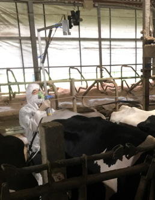
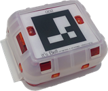
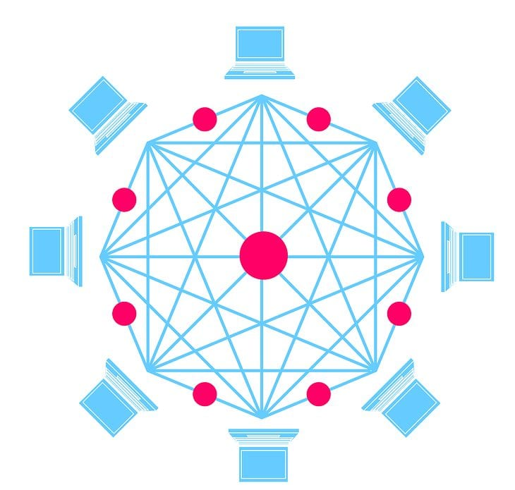

AI・IoT技術の活用
現在、普及が進んでいるのが、「スマート畜産」として括られるロボット、AI、IoT技術の数々です。
農林水産省の「スマート農協技術カタログ」では技術を以下のように分類されています。
①センシング・モニタリング：生体データ（繁殖機能や栄養・健康状態等）や飼養環境に関するデータを提供する技術
②生体データ活用：生体に関するデータをAI等で活用する技術
③飼養環境データ活用：飼養環境に関するデータをAI等で活用する技術
④自動運転・作業軽減：：自動運転ロボット等の導入により作業の軽労化を図る技術
⑤経営データ管理：経営の現状分析、計画作成、進行管理等を行う技術
当社が提供するサービスは①～⑤の技術を網羅しております。
主な適用技術をご紹介いたします。
技術一覧
-

-
画像データ活用技術
（飼養管理高度化） - 搾乳ロボットの出口側の柵に設置された金属センサーと出口上部に固定されたカメラを連携することで（固定式）、 搾乳が終わった牛を撮影し、BCS判定を行います。 現在、最新の軽量カメラを使用することでポータブル化も行いました。 また、本システムでは、AIの技術を用いて深度画像から背景を除去することを可能としています。
-
画像データ活用技術
-

-
活動量計
（飼養管理高度化） - 活動量計を牛に装着することで牛の活動量データを取得します。 また、この活動量計の番号を認識することで装着している牛の画像に個体情報の表示を可能としました。 併せて活動量計からデータを受信する際の電波強度を集約、機械学習することで牛の位置が特定します（特許出願済）。
-
活動量計
-
-
AI分析
（飼養管理高度化） -
・蓄積した活動量データを用いて発情を予測するアルゴリズムを開発しました。
・機械学習により牛の位置情報を特定する仕組みを構築しました（特許取得）。
その他、乳中のデータを基に機械学習を活用して
・乳房炎発症予測
・潜在性ケトーシス発症予測
を行います。これらの予測を基にオンライン上で閲覧できるレポートを提供します。
特許 -
AI分析
-

-
ブロックチェーン
（乳牛トレーサビリティ高度化） - 牛の取引において、育成農家から搾乳農家へと取引される際、 血統や哺乳量等の客観的なデータが関係者間で適切に共有される必要があります。 ブロックチェーン技術による子牛・母牛の情報のデータベース化は親和性が非常に高く、 取引におけるデータの正当性・一貫性を確保することができ、安全・安心な流通を促進できます。
-
ブロックチェーン